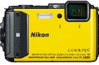
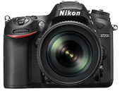

-
具備10m防水能力，可抵禦自 1.5m跌落之撞擊，更可防塵、防寒-10°C，無論是泳池玩樂、家族滑雪，統統OK！
了解更多 -

要拍攝水底趣事，卻不想弄濕自己？只需讓 S33 潛入水中，並使用水底臉部構圖功能，即可自動偵測主體。
了解更多 -

具備可深潛水下 30m、防寒 -10°C，更可承受從約 2.1m 高處跌落的撞擊，並具備防塵的堅強保護力．
了解更多 -
有了五軸防震，即使邊走邊拍，也能輕鬆錄製短片。全新Short Movie Show 可將多個影片連結。
了解更多 -
相機內建GPS、GLONASS、QZSS、指南針及世界地圖，同時配備高度計及深度測量儀，高飛低潛。
了解更多 -

運用S33讓照片輕鬆添加裝飾畫框！輕觸按鍵，還能為照片上加入「超酷！」「好！」等有趣標籤！
了解更多 -
153點自動對焦。4K 高畫質影片拍攝。連拍速度每秒可達10張。
了解更多 -
採用每秒 12 幅的高速連拍速度，效果依然穩定。內有 153 個對焦點，當中包括 99 個跨類別感應器。
了解更多 -
配備聰明的眼睛感應器，影像重看效能大幅提升，設有用途百變的多角度觸控螢幕，讓您更易追尋創作夢想。
了解更多
CRMARA BY ROCKY
喜歡一家人 相依相偎 ，
用細膩相片保存專屬自已的精彩，細細品味每一次旅程的獨道見解。
最新情報
Nikon再突破 1吋大感光 & 4K畫質 DL系列隨身機正式發表
Nikon公司今日隆重宣佈，Nikon全新 DL 系列高階輕便型相機正式面世，一吋大感光元件、高效能Nikkor鏡頭、SnapBridge 連線能力與一系列豐富功能，定能完美融入攝影發燒友與專業攝影師隨身裝備之中。
Nikon DL 系列的「D」源於Nikon專業攝影師社群的開發靈感，銳意傳承Nikon數位單眼相機傳統；而「L」則指Nikkor卓越鏡頭技術，是為整個系列的核心。此系列由 DL 18-50mm f/1.8-2.8、DL 24-85mm f/1.8-2.8 及 DL 24-500mm f/2.8-5.6 三款嶄新型號產品組成，每款均配備各有特色的Nikkor鏡頭組合，為各式攝影風格精心打造。
DL 18-50 mm f/1.8-2.8 配備 18-50mm *1 超廣角變焦鏡頭，其最大光圈屬Nikkor鏡頭史上最快速、最亮麗的規格；DL 24-85 mm f /1.8-2.8 則採用操作靈活的 24-85 mm *1 常規變焦鏡頭，可營造曼妙背景模糊效果，為您送上超級微距功能；再加上備有超級變焦鏡頭的 DL 24-500 mm f/2.8-5.6，在多種焦距之下均可帶來卓越解像力，達致相當於超遠攝 500 mm*1 鏡頭的效果，此系列可謂盡善盡美。
對焦最快，每秒20張瞬間連拍，極細膩4K錄影，3吋180度觸控螢幕，質感蒙皮，時尚有型
熱銷機款買就送原廠電池1+1 最經濟實用的好禮內容 還有大容量記憶卡，千萬別錯過！
關於我們
一台數位相機，拍下生活點滴、歡慶時刻、旅遊隨想， 一張鏡頭下的影像，也為自己記錄世界的視角與態度。
CAMERA 國際貿易董事長 簡劭聖 先生
不完美的世界，因你獨特的看法而變得完美。
CAMERA 國際貿易 總裁 欸克斯 小姐
當最專業相機品牌遇到新主張往往能捕捉生活中靈光乍現的瞬間。
CAMERA 國際貿易 總監 皮克斯 先生
- 經理 賈克斯
- 主管 拉克斯
- 員工 一克斯
- 員工 二克斯
- 員工 三克斯
- 員工 四克斯
- 員工 五克斯
- 員工 六克斯
面對數位相機使用率迅速的成長，我們憑藉著三十年的經驗，加上多種專業儀器設備與充足的零組件，贏得所有合作廠商的信心，故能即時掌握最新資訊，早一步預見市場的成長契機與變化，並迅速反應每一位客戶的需求，提供完美的諮詢服務。
-->
產品介紹
相關資訊
銷售據點├
地址：403台中市西區英才路423號 1F NOVA 資訊 廣場 168 櫃
營業時間：10:00-22:00
維修須知
若產品發生問題時，可蒞臨或直接寄送至國祥維修服務中心。若需寄送者請將產品謹慎包裝且附上聯絡資料，不需附任何配件，除非故障問題與該配件相關。若非零件缺貨，維修需時約7個工作天;完修後國祥會主動通知。
相機回收
壞掉的相機，如果是數位相機，有些零件不便宜，可當「零件機」使用，把物品上架，有同型相機的換家，有可能會換。 如果是傳統底片相機，當裝飾品吧！建議拿去回收。如果是傳統單眼相機，這種古董相機，有些收藏家較可能從您已報廢的相機取得他想要的零件。
保固說明
1. 相機產品保固細則 2. 維修退換貨相關步驟 3. 要求履行保固之必要條件 4. 更換、維修及退款規定 5. 前項規定的例外事項 6. 有限責任 7. 產品保固年限 8. 免責與不承諾條款 9. 看產品保固年限。產品保固期間之計算，是自原始購買日開始起算。並請於要求保固時提出購買日期證明文件。
聯絡我們
04-24789966 分機666
網站購物相關
04-24400208
服務信箱
product@gmail.com